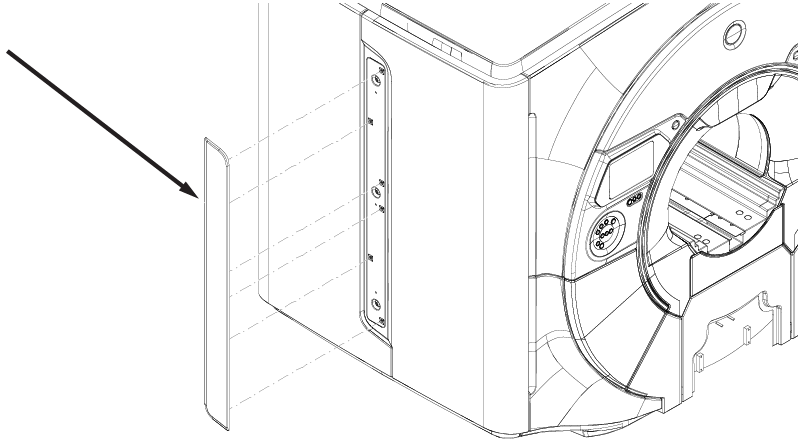

- 00000018WHA30697EGYZ
- id_20028216.9
- Oct 20, 2022 1:35:57 AM
Removing the magnet service access trim
Removes the service access trim. The trim panel covers the screws securing the front and rear service access panels.
Prerequisites
| Personnel requirements | |||
|---|---|---|---|
| Required persons | Preliminary requirements | Procedure | Finalization |
| 1 | - | 5 minutes | - |
Procedure
Pull the service access trim panel away from the magnet to release six ball catch latches.
Figure 1. Service access trim
